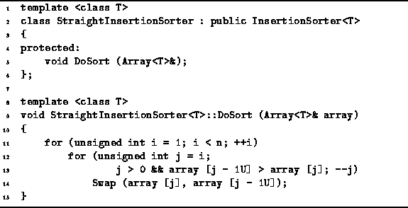

Data Structures and Algorithms
with Object-Oriented Design Patterns in C++
Data Structures and Algorithms
with Object-Oriented Design Patterns in C++
Program  defines the class template
StraightInsertionSorter<T>.
This class simply provides an implementation for the DoSort routine.
DoSort takes one argument--a reference to an Array<T> instance.
The array initially contains the data to be sorted.
When the function returns,
the contents of the array are sorted.
defines the class template
StraightInsertionSorter<T>.
This class simply provides an implementation for the DoSort routine.
DoSort takes one argument--a reference to an Array<T> instance.
The array initially contains the data to be sorted.
When the function returns,
the contents of the array are sorted.

Program: StraightInsertionSorter<T> Class DoSort Member Function Definition
In order to determine the running time
of the DoSort routine given in Program ,
we need to determine the number of iterations of the inner loop (lines 12-14).
The number of iterations of the inner loop
in the  iteration of the outer loop
depends on the positions of the values in the array.
In the best case, the value in position i of the array
is larger than that in position i-1
and zero iterations of the inner loop are done.
In this case, the running time for insertion sort is O(n).
Notice that the best case performance occurs
when we sort an array that is already sorted!
iteration of the outer loop
depends on the positions of the values in the array.
In the best case, the value in position i of the array
is larger than that in position i-1
and zero iterations of the inner loop are done.
In this case, the running time for insertion sort is O(n).
Notice that the best case performance occurs
when we sort an array that is already sorted!
In the worst case, i iterations of the inner loop are required
in the  iteration of the outer loop.
This occurs when the value in position i of the array is smaller
than the values at positions 0 through i-1.
Therefore, the worst case arises when we sort an array in which the elements
are initially sorted in reverse.
In this case the running time for insertion sort is
iteration of the outer loop.
This occurs when the value in position i of the array is smaller
than the values at positions 0 through i-1.
Therefore, the worst case arises when we sort an array in which the elements
are initially sorted in reverse.
In this case the running time for insertion sort is  .
.
 Copyright © 1997 by Bruno R. Preiss, P.Eng. All rights reserved.
Copyright © 1997 by Bruno R. Preiss, P.Eng. All rights reserved.